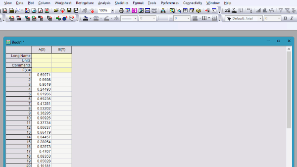
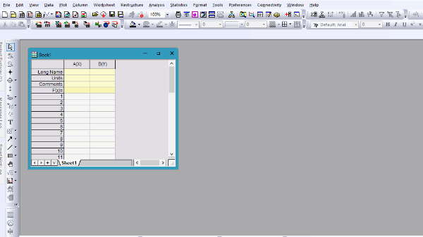

最終更新日：2024/6/12
Note: Originには、コーディングを行わずに反復的なタスクを自動化する機能があります。通常、Originを使用するにあたってコーディングは必要ありませんが、このページではOriginのプログラミング機能に興味があるユーザー向けに解説します。
OriginではユーザーがGUIやダイアログを使って複雑なコマンドや関数を実行できます。通常、コーディングは必要ありません。Originは完全にプログラム可能なソフトウェアとして設計されており、様々な高水準言語のサポートが組み込まれています。
プログラミング機能により、ユーザーはワークフローをカスタマイズ、自動化、共有することができます。一般的な用途：
Originでは並列に動作する言語の数が多いため、ユーザーはOriginで基盤となるコード、コマンド、スクリプトを自由に見ることができる様々なツールを利用できます。このページで説明されている機能は、Xファンクションを含むLabTalkスクリプトにアクセスするために主に使用されることに注意してください。
ユーザーは、 Ctrl + Shiftキーを押したまま、ほとんどのメニュー項目、ツールバーボタン、ミニツールバー機能をクリックして、(1)コードビルダに対応するスクリプトを表示し、(2)スクリプトウィンドウにコマンドをダンプしたり、その他の識別情報を表示できます。この簡単な例をYouTubeチャンネルで紹介しています。
Originはスクリプトウィンドウを使って、ユーザーがECHO変数の値を変更したときに処理されるコマンド、スクリプト、エラーメッセージを表示できます。デフォルトでは、ECHOは0に設定され、コマンドの表示を無効にします。
echoを有効にするには、スクリプトウィンドウでecho = Numberと入力します。Numberには、次のいずれかを指定できます。
| 値 | アクション |
|---|---|
| 1 | エラーを生成するコマンドを表示する |
| 2 | 遅延実行のためにキューに送信されたスクリプトを表示する |
| 4 | コマンドを含むスクリプトを表示する |
| 8 | 割り当てを含むスクリプトを表示する |
| 16 | マクロを表示する |
ECHOはこれらの数字の合計を任意に設定して、オプションを組み合わせることができます。例えば、echo = 7;のとき、Originは(1)エラーを生成するコマンド、(2)キューに送信されたスクリプト、(4)コマンドを含むスクリプトを表示します。echo = 31の場合、Originは上の表にリストされている5つのオプションすべての組み合わせを表示します。
終了したら、echo = 0;にリセットすることを推奨します。
ECHOの使い方を示す簡単な例は、ドキュメントにあります。
処理と分析を自動化する強力なツールとして「スクリプトを生成」コマンドがあり、ウィンドウ上部のフライアウトドロップダウンメニューを介してほとんどのXファンクションダイアログに表示されます。これには、分析と視覚化の際にワークシートやグラフで実行されるアクションの多くが含まれます。

この機能はOriginで基盤となるXファンクションにアクセスするために使われます。
| Note:
システム変数@GASは、スクリプト生成機能を使用したときに表示される情報量を制御します。  |
簡単なチュートリアルはドキュメントにあります。
Originには複数のインターフェースがあり、ユーザーはコードを入力して作業を自動化またはカスタマイズすることができます。